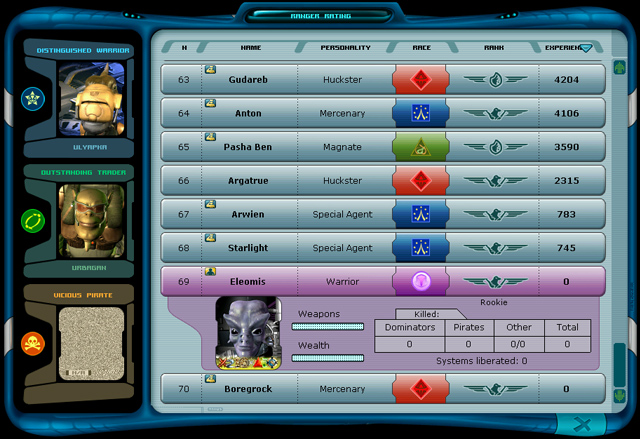

Ranger Manual > Navigation
panel > Ranger rating (R)
|
Ranger Manual > Navigation
panel > Ranger rating (R)
|
| Ranger rating (R) The rating is an open thing and is maintained and updated by the Ranger Centers for a comparative analysis. It represents a list of all registered rangers, displays their experience and other important characteristics. (The experience is granted to a ranger for the liberation of the star systems, for military actions, for trading, completion of quests, e.t.c. Gaining experience each ranger can increase his skills.) The higher is the ranger's rating, the more considerable is his input into the joint matter . |

| There is a so-called 'Honor board' in the left part of the window: here you can find the rangers, which made the
most remarkable progress in the particular categories (trader, warrior, pirate). Note. In order to see the rating of a particular category hover the cursor over the ranger's nature. By default the list of rangers is sorted by the experience. There is an opportunity to sort out the rating list by other categories: by name, by race or by the ranger rank, in the descending or ascending order. In order to sort the list by the selected criteria: • Click the name of the relevant column. In order to sort the list in the descending or ascending order: • Click the same column name once again. |